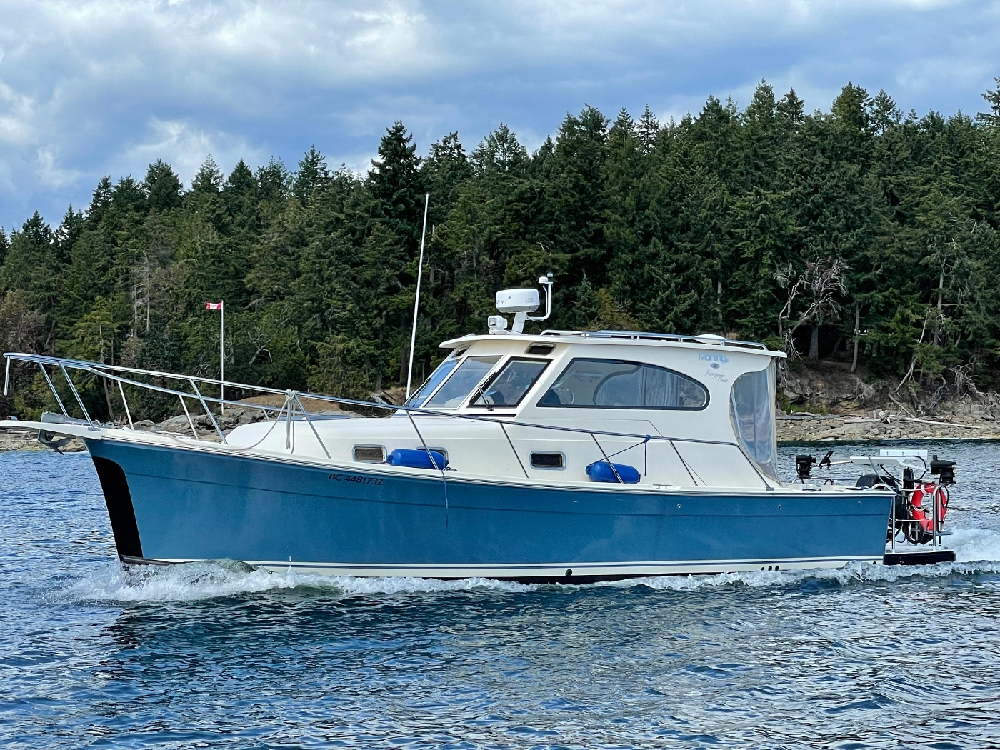

Mainship 30 Pilot
1998–2008
The Mainship 30 Pilot is a compact Downeast-style express cruiser with a semi-displacement hull, a large cockpit and one-cabin accommodation below. Most examples use a single diesel shaft drive, with original and Series II hull and interior changes during production. It combines moderate planing capability with economical operation at reduced speeds.

- Length
- 33.08 ft
- Beam
- 10.25 ft
- Draft
- 2.92 ft
- Hull behaviour
- Semi-Displacement
- Fuel
- Diesel
- Propulsion
- Shaft
- Engine configuration
- Single inboard diesel
- Boat family
- Downeast
- Construction
- Solid fiberglass hull with cored deck structures
Best for
- Couples wanting a compact Downeast-style cruiser
- Owners combining day use with short coastal trips
- Buyers needing lower air draft than a flybridge trawler
Trade-offs
- Limited interior volume and guest privacy
- Engine access and cabin arrangement vary by version
- Higher-speed operation increases fuel use substantially
- Open or semi-enclosed helm arrangements offer less weather protection than a trawler salon
Known concerns
- No model-specific concern has been promoted to B-Atlas’s evidence threshold. This does not mean the model has no age-, condition- or hull-specific risks.
Inspection focus
- Confirm whether the boat is the original hull or Series II and verify actual draft
- Inspect deck and windshield bedding for moisture intrusion
- Inspect fuel tank, exhaust, shaft, rudder and engine mounts
- Confirm cockpit drainage and access to machinery and steering
Continue researching
Related boat models
34 ft · Semi-Displacement
34 ft · Semi-Displacement
34 ft · Semi-Displacement
34 ft · Semi-Displacement
33.5 ft · Semi-Displacement
39.75 ft · Semi-Displacement
About this record
B-Atlas preserves uncertainty: missing information remains unknown rather than being treated as a negative. Specifications and guidance describe the model record; individual boats can differ by year, equipment, refit and condition.